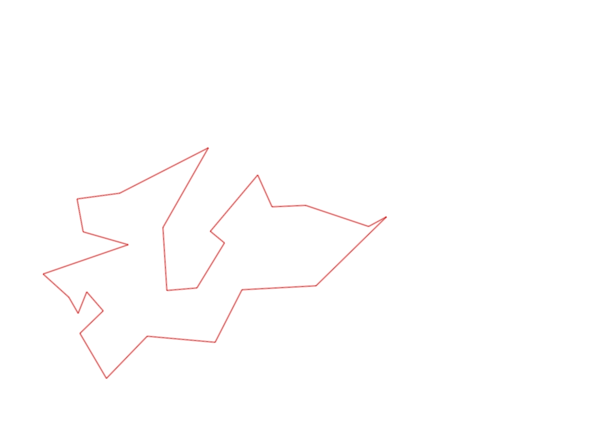
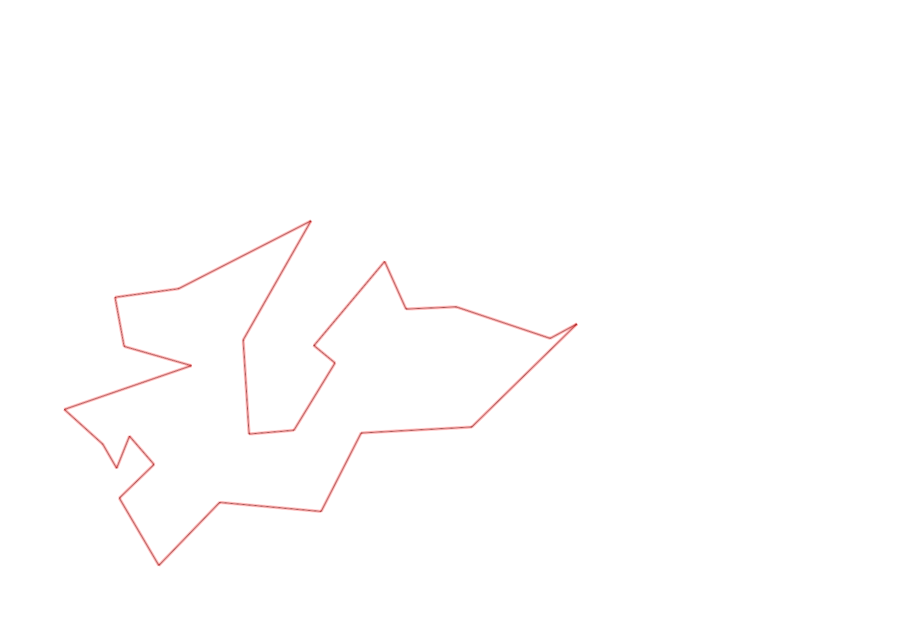

| Control |
Points |
Time Punched |
Distance |
Your Time |
Pace |
Place |
Fastest Time |
Median Time |
% Behind Fastest |
| 127 |
20 |
|
0.06 |
0:00:07 |
01:56 |
5 / 30 |
0:00:01 |
0:00:32 |
600% |
| 38 |
30 |
|
0.18 |
0:01:23 |
07:41 |
4 / 13 |
0:01:04 |
0:01:50 |
29% |
| 60 |
60 |
|
0.11 |
0:01:09 |
10:27 |
13 / 19 |
0:00:42 |
0:00:57 |
64% |
| 126 |
20 |
|
0.22 |
0:03:05 |
14:00 |
2 / 2 |
0:03:02 |
0:03:03 |
1% |
| 107 |
100 |
|
0.32 |
0:03:30 |
10:56 |
1 / 2 |
0:03:30 |
0:03:38 |
0% |
| 63 |
60 |
|
0.35 |
0:02:37 |
07:28 |
7 / 18 |
0:01:59 |
0:02:42 |
31% |
| 32 |
30 |
|
0.15 |
0:00:53 |
05:53 |
11 / 27 |
0:00:36 |
0:00:56 |
47% |
| 44 |
40 |
|
0.12 |
0:02:15 |
18:45 |
23 / 29 |
0:00:52 |
0:01:49 |
159% |
| 130 |
30 |
|
0.16 |
0:01:25 |
08:51 |
2 / 4 |
0:00:58 |
0:01:26 |
46% |
| 53 |
50 |
|
0.31 |
0:02:38 |
08:29 |
2 / 2 |
0:02:25 |
0:02:31 |
8% |
| 69 |
60 |
|
0.12 |
0:00:57 |
07:55 |
4 / 29 |
0:00:45 |
0:01:18 |
26% |
| 71 |
70 |
|
0.06 |
0:01:09 |
19:10 |
12 / 25 |
0:00:48 |
0:01:13 |
43% |
| 54 |
50 |
|
0.08 |
0:00:40 |
08:20 |
11 / 33 |
0:00:27 |
0:00:45 |
48% |
| 41 |
40 |
|
0.09 |
0:01:03 |
11:40 |
2 / 13 |
0:01:01 |
0:01:43 |
3% |
| 40 |
40 |
|
0.11 |
0:00:59 |
08:56 |
11 / 24 |
0:00:45 |
0:01:00 |
31% |
| 77 |
70 |
|
0.18 |
0:02:21 |
13:03 |
10 / 21 |
0:01:35 |
0:02:21 |
48% |
| 59 |
50 |
|
0.21 |
0:02:55 |
13:53 |
11 / 18 |
0:02:00 |
0:02:47 |
45% |
| 61 |
60 |
|
0.24 |
0:02:35 |
10:45 |
3 / 19 |
0:02:14 |
0:03:16 |
15% |
| 42 |
40 |
|
0.21 |
0:02:45 |
13:05 |
4 / 14 |
0:02:19 |
0:03:34 |
18% |
| 37 |
30 |
|
0.26 |
0:02:45 |
10:34 |
1 / 9 |
0:02:45 |
0:03:57 |
0% |
| 64 |
60 |
|
0.34 |
0:03:49 |
11:13 |
1 / 2 |
0:03:49 |
0:04:07 |
0% |
| 48 |
40 |
|
0.07 |
0:00:47 |
11:11 |
5 / 9 |
0:00:34 |
0:00:47 |
38% |
| 47 |
40 |
|
0.23 |
0:02:10 |
09:25 |
2 / 4 |
0:01:44 |
0:02:35 |
25% |
| 92 |
90 |
|
0.12 |
0:01:47 |
14:51 |
2 / 10 |
0:01:21 |
0:03:13 |
32% |
| 57 |
50 |
|
0.12 |
0:06:58 |
58:03 |
9 / 9 |
0:01:59 |
0:05:37 |
251% |
| Finish |
0 |
|
0.26 |
0:02:34 |
09:52 |
1 / 2 |
0:02:34 |
0:04:35 |
0% |
Total Distance Covered: 4.68km
Points Scored: 1230
Late Penalty: 0
Final Score: 1230
Total Time: 0hours 55minutes 16seconds
Efficiency: 262.82 points/km
 
